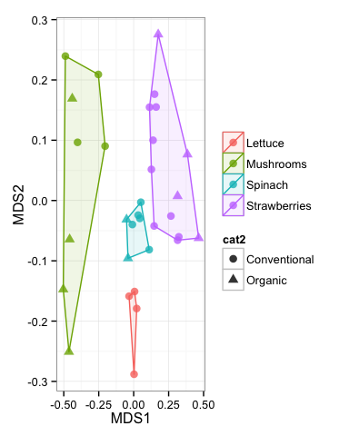
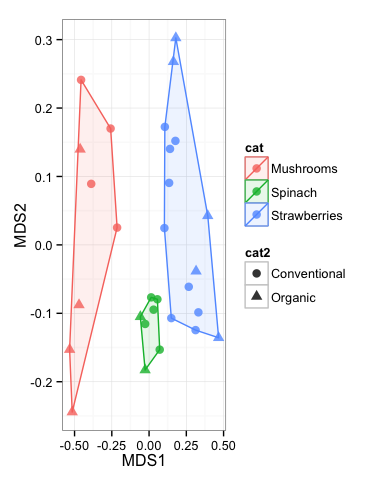
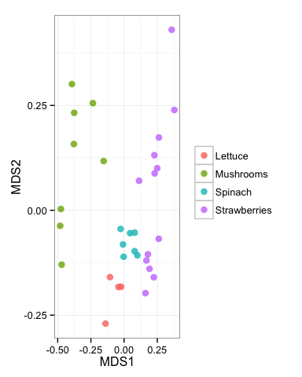
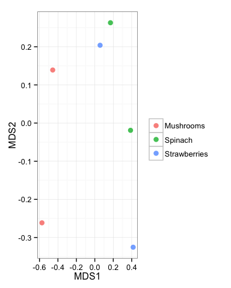

Getting Started with mctoolsr
Jonathan W. Leff
2016-06-01
mctoolsr (prononounced, M-C-tools-R) is an R package developed to facilitate microbial community analyses. The current functions are meant to handle an input taxa (OTU) table in either biom or tab-delimited format and help streamline common (and more specialized) downstream analyses. It is under active development, so please submit bug reports and feature requests as indicated below.
This document serves as a brief introduction to using mctoolsr. This document will go through getting the package working and a few examples using the most popular functions.
See here for a list of current functions: https://github.com/leffj/mctoolsr/blob/master/function_list.md
Other tutorials
Getting and using mctoolsr
mctoolsr is available on Github at: https://github.com/leffj/mctoolsr
To install:
install.packages("devtools")
devtools::install_github("leffj/mctoolsr")To use in a script, load and attach the package using:
library(mctoolsr)Updating mctoolsr
mctoolsr is under active devlopment. Update regularly to use the latest features and for bug fixes. You will have to load and attach as above after updating.
devtools::install_github("leffj/mctoolsr")To report bugs or request features, go to:
https://github.com/leffj/mctoolsr/issues
Citing
The package is in initial development, so for now, please simply cite the Github URL: https://github.com/leffj/mctoolsr/
Examples
Note that the following examples use an example dataset taken from a study examining the bacterial communities associated with fruits and vegetables (Leff et al. 2013). You can find this dataset in the mctoolsr/examples directory.
Loading taxa tables and metadata
You can load a taxa (i.e. OTU) table in biom format using the following approach. Note that you don't need to use system.file() when using your own filepaths -- just use the filepath directly. This function just helps your system find the example files.
One of the nice things about loading your data this way is that all the sample IDs will be matched between your taxon table and metadata so that they will be in the same order and any sample IDs not present in one or the other will be dropped.
You can optionally filter out samples of a specific type during this step, but this can also be done separately as shown here.
tax_table_fp = system.file('extdata', 'fruits_veggies_taxa_table_wTax.biom',
package = 'mctoolsr')
map_fp = system.file('extdata', 'fruits_veggies_metadata.txt',
package = 'mctoolsr')
input = load_taxa_table(tax_table_fp, map_fp)## 32 samples loaded
The loaded data will consist of three parts:
- The taxon table itself: "data_loaded"
- The metadata: "map_loaded"
- The taxonomic classifiers (if provided in the biom file): "taxonomy_loaded"
Any of these components can be quickly accessed using the '$' sign notation as shown in the next example.
Returning numbers of sequences per sample
This can be achieved simply by calculating column sums on the taxon table:
sort(colSums(input$data_loaded))## ProA37 ProB70 ProC66 ProB39 ProC40 ProB57 ProA12 ProA58 ProB34 ProC36
## 1009 1011 1068 1152 1179 1192 1199 1216 1265 1313
## ProA65 ProB9 ProB60 ProC65 ProB35 ProB10 ProB67 ProA66 ProB36 ProB71
## 1367 1371 1395 1409 1492 1599 1611 1614 1642 1745
## ProB40 ProA36 ProB58 ProB33 ProA16 ProA35 ProA33 ProB12 ProA13 ProA34
## 1771 1802 1860 2257 2312 2530 2585 2642 2819 2982
## ProA15 ProA14
## 3291 3390
Rarefying
As you can see from the previous example, we can rarefy (i.e. normalize for variable sequence depths) to 1000 sequences per sample without losing any samples. This can be done using the following command:
input_rar = single_rarefy(input, 1000)## 32 samples remaining
colSums(input_rar$data_loaded)## ProA12 ProA13 ProA14 ProA15 ProA16 ProA33 ProA34 ProA35 ProA36 ProA37
## 1000 1000 1000 1000 1000 1000 1000 1000 1000 1000
## ProA58 ProA65 ProA66 ProB10 ProB12 ProB33 ProB34 ProB35 ProB36 ProB39
## 1000 1000 1000 1000 1000 1000 1000 1000 1000 1000
## ProB40 ProB57 ProB58 ProB60 ProB67 ProB70 ProB71 ProB9 ProC36 ProC40
## 1000 1000 1000 1000 1000 1000 1000 1000 1000 1000
## ProC65 ProC66
## 1000 1000
Summarize taxonomic relative abundances at a higher taxonomic level
It is useful to get a feel for the taxonomic composition of your samples early on in the exploratory data analysis process. This can quickly be done by calculating taxonomic summaries at higher taxonomic levels - in this case at the phylum level. The values represent the sum of all the relative abundances for OTUs classified as belonging to the indicated phylum. In this example just the first few phyla and samples are shown.
tax_sum_phyla = summarize_taxonomy(input_rar, level = 2, report_higher_tax = FALSE)
tax_sum_phyla[1:5, 1:8]## ProA12 ProA13 ProA14 ProA15 ProA16 ProA33 ProA34 ProA35
## p__ 0.001 0.00 0.000 0.000 0.000 0.000 0.000 0.000
## p__[Thermi] 0.001 0.00 0.000 0.000 0.000 0.000 0.003 0.000
## p__Acidobacteria 0.001 0.00 0.000 0.000 0.000 0.000 0.000 0.000
## p__Actinobacteria 0.382 0.01 0.004 0.023 0.002 0.049 0.070 0.092
## p__Armatimonadetes 0.000 0.00 0.000 0.001 0.000 0.000 0.000 0.000
Calculating a dissimilarity matrix
For dissimilarity-based analyses such as ordinations and PERMANOVA, it is necessary to calculate a dissimilarity matrix. There is currently support for Bray-Curtis dissimilarities based on square-root transformed data. This is a widely used dissimilarity metric for these analyses, but others will be added as requested.
dm = calc_dm(input_rar$data_loaded)Plotting an ordination
There are two ways to plot ordinations in mctoolsr. The multistep way is shown here, but there is also a shortcut using the plot_nmds() function.
ord = calc_ordination(dm, 'nmds')## Run 0 stress 0.1129999
## Run 1 stress 0.1130003
## ... procrustes: rmse 8.348814e-05 max resid 0.0003674289
## *** Solution reached
plot_ordination(input_rar, ord, 'Sample_type', 'Farm_type', hulls = TRUE)
Filtering samples
It is easy to filter samples from your dataset in mctoolsr. You can specify to remove samples meeting a specified condition in the metadata or keep those samples. In the example below, lettuce samples are removed, and the ordination is plotted again.
input_rar_filt = filter_data(input_rar, 'Sample_type', filter_vals = 'Lettuce')## 28 samples remaining
dm = calc_dm(input_rar_filt$data_loaded)
ord = calc_ordination(dm, 'nmds')## Run 0 stress 0.10499
## Run 1 stress 0.1239615
## Run 2 stress 0.1239609
## Run 3 stress 0.1049921
## ... procrustes: rmse 0.0005446086 max resid 0.002104219
## *** Solution reached
plot_ordination(input_rar_filt, ord, 'Sample_type', 'Farm_type', hulls = TRUE)
Filtering taxa
There are multiple taxa filtering options in mctoolsr. This example shows how to explore the proteobacteria sequences across the samples. Taxa can also be filtered based on their relative abundance.
input_proteobact = filter_taxa_from_input(input, taxa_to_keep = 'p__Proteobacteria')## 2265 taxa removed
sort(colSums(input_proteobact$data_loaded))## ProC40 ProA14 ProA12 ProA58 ProA16 ProB70 ProB10 ProB9 ProA37 ProB12
## 231 435 459 614 780 843 889 940 980 1019
## ProC66 ProC36 ProB57 ProA13 ProA36 ProB39 ProB34 ProB60 ProA65 ProA35
## 1032 1051 1063 1080 1082 1082 1196 1196 1261 1336
## ProC65 ProB71 ProA34 ProB67 ProA66 ProB35 ProB58 ProB36 ProA15 ProB40
## 1369 1376 1406 1422 1436 1472 1544 1594 1601 1748
## ProA33 ProB33
## 1768 2126
input_proteobact_rar = single_rarefy(input_proteobact, 219)## 32 samples remaining
plot_nmds(calc_dm(input_proteobact_rar$data_loaded), metadata_map = input_proteobact_rar$map_loaded,
color_cat = 'Sample_type')## Run 0 stress 0.1422097
## Run 1 stress 0.1353815
## ... New best solution
## ... procrustes: rmse 0.1211589 max resid 0.2623186
## Run 2 stress 0.1353809
## ... New best solution
## ... procrustes: rmse 0.0007028095 max resid 0.0034041
## *** Solution reached

Taxa based exploration
It is often useful to determine the taxa driving differences between the community compositions of different sample types. This example shows one way to do this to determine taxa driving differences between sample types.
tax_sum_families = summarize_taxonomy(input_rar_filt, level = 5, report_higher_tax = FALSE)
taxa_summary_by_sample_type(tax_sum_families, input_rar_filt$map_loaded,
type_header = 'Sample_type', filter_level = 0.05, test_type = 'KW')## pvals pvalsBon pvalsFDR Mushrooms
## f__Pseudomonadaceae 2.095377e-05 0.0001466764 0.0001466764 0.145875
## f__Sphingobacteriaceae 8.194057e-05 0.0005735840 0.0002867920 0.286750
## f__[Weeksellaceae] 3.690334e-04 0.0025832336 0.0008610779 0.108875
## f__Enterobacteriaceae 3.805965e-04 0.0026641754 0.0006660438 0.031875
## unclassified 2.288113e-03 0.0160167906 0.0032033581 0.072125
## f__Bacillaceae 1.093122e-02 0.0765185262 0.0127530877 0.002750
## f__Sphingomonadaceae 3.461292e-02 0.2422904312 0.0346129187 0.008000
## Spinach Strawberries
## f__Pseudomonadaceae 0.0658571429 0.0014615385
## f__Sphingobacteriaceae 0.0032857143 0.0009230769
## f__[Weeksellaceae] 0.0025714286 0.0017692308
## f__Enterobacteriaceae 0.7307142857 0.6174615385
## unclassified 0.0281428571 0.0228461538
## f__Bacillaceae 0.0050000000 0.1619230769
## f__Sphingomonadaceae 0.0008571429 0.0597692308
This analysis demonstrates that Pseudomonadaceae and Sphingobacteriaceae tend to have higher relative abundances on mushrooms than spinach and strawberries. The p values are based on Kruskal-Wallis tests and two different corrections are reported to deal with the multiple comparisons (Bonferroni and FDR). Rare taxa are filtered out using the filter_level peramter. The values indicated under the sample types are mean relative abundances.
Calculating mean dissimilarities
Sometimes it is necessary to calculate mean dissimilarities. This is important in cases where sample types are pseudoreplecated. This is not the case here, but this example demonstrates this functionality.
dm = calc_dm(input_rar_filt$data_loaded)
dm_aggregated = calc_mean_dissimilarities(dm, input_rar_filt$map_loaded,
'Sample_Farming', return_map = TRUE)
ord = calc_ordination(dm_aggregated$dm, ord_type = 'nmds')## Run 0 stress 0
## Run 1 stress 0
## ... procrustes: rmse 0.1601357 max resid 0.2796064
## Run 2 stress 7.154952e-05
## ... procrustes: rmse 0.2366454 max resid 0.4165301
## Run 3 stress 0
## ... procrustes: rmse 0.2188863 max resid 0.3178882
## Run 4 stress 0
## ... procrustes: rmse 0.2262325 max resid 0.3089372
## Run 5 stress 0
## ... procrustes: rmse 0.1715638 max resid 0.2354397
## Run 6 stress 0
## ... procrustes: rmse 0.2009553 max resid 0.324707
## Run 7 stress 0
## ... procrustes: rmse 0.1657559 max resid 0.2912538
## Run 8 stress 7.95778e-06
## ... procrustes: rmse 0.2487959 max resid 0.3339748
## Run 9 stress 0
## ... procrustes: rmse 0.04410468 max resid 0.08375934
## Run 10 stress 0.1842127
## Run 11 stress 0
## ... procrustes: rmse 0.2451649 max resid 0.3865037
## Run 12 stress 9.755031e-05
## ... procrustes: rmse 0.1802635 max resid 0.3238837
## Run 13 stress 0
## ... procrustes: rmse 0.2025429 max resid 0.3405505
## Run 14 stress 0
## ... procrustes: rmse 0.1394037 max resid 0.1877957
## Run 15 stress 0
## ... procrustes: rmse 0.2394039 max resid 0.3776172
## Run 16 stress 8.916611e-05
## ... procrustes: rmse 0.2356938 max resid 0.3258205
## Run 17 stress 6.098074e-05
## ... procrustes: rmse 0.1925284 max resid 0.3579026
## Run 18 stress 9.267811e-05
## ... procrustes: rmse 0.2307023 max resid 0.3148279
## Run 19 stress 8.431551e-05
## ... procrustes: rmse 0.2392535 max resid 0.4202549
## Run 20 stress 5.9059e-05
## ... procrustes: rmse 0.2345371 max resid 0.3936978
## Warning in vegan::metaMDS(dm, k = 2): Stress is (nearly) zero - you may
## have insufficient data
plot_ordination(dm_aggregated, ord, color_cat = 'Sample_type')
Exporting a taxa table
Taxa tables that have been edited in *mctoolsr can be exported in text (tab delimited) format for later use. Use this function:
export_taxa_table(input_rar_filt, "export/path/otu_table_export.txt")